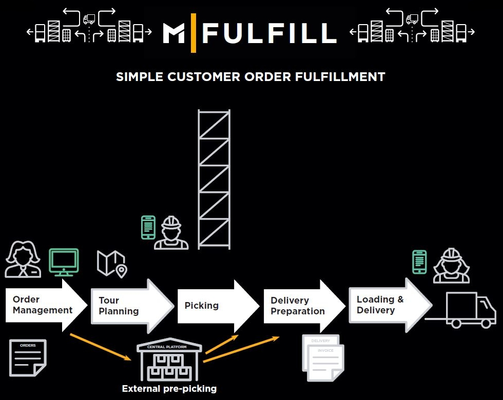

Who or what is M|FULFILL
A short Introduction
What is M|FULFILL
-
Purpose: Make our customer order fulfillment processes as efficient as possible
Fulfillment done by Order Management, Depot Management, Pick & Pack
Support in-store and depot staff with first-class digital tools for picking, packing and managing
Minimize and simplify communication with customers about order information
What is M|FULFILL

The Verticals: OM, DM & PP
Order Management
- Platform provides overview on orders
- Steer an order
- Entry point for submitted orders
- Perspectives on order data
- Many functionalities
- Splitting orders
- Returns and email communication

Depot Management
- Depot Setup: depot setup & depot setting
- Job Management: Zebra & PAM
- Labour Management: Managing workers
- Stock Location Management: Goods inside a depot

Pick & Pack
- Wave preparation
- Picking
- Packing
- Delivery preparation

Any questions?
|
@joinmetronomnow
@TKrauthoff |
|
| http://tiny.cc/some-link-to-the-slides |